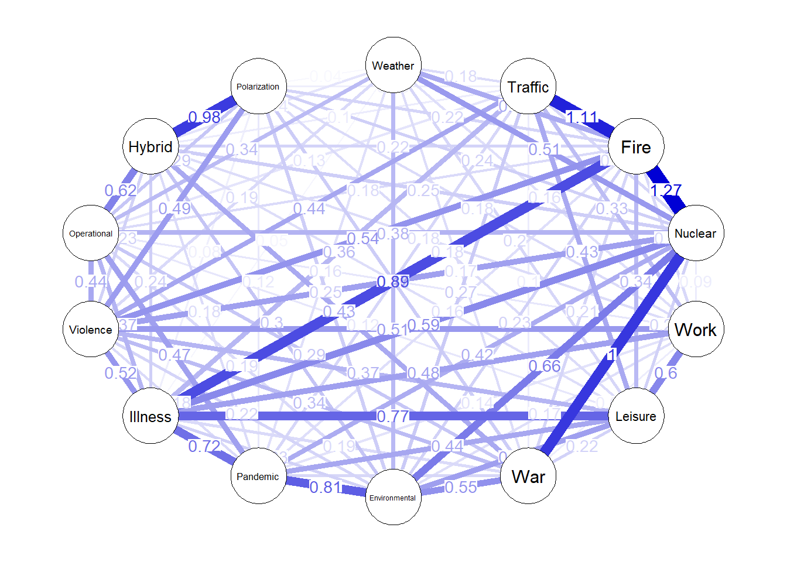

# Run setup script
source("prerender.R")
network_data <- data %>% dplyr::select(Weather:Polarization)
network_labels <- names(network_data)
single_net <- bootnet::estimateNetwork(
network_data,
default = "mgm",
tuning = 0.25,
criterion = "EBIC",
rule = "OR",
type = rep("c", 14)
)Estimating Network. Using package::function:
- mgm::mgm for network computation
- Using glmnet::glmnet'level' argument not assigned. Setting level to 1 for all Gaussian/Poisson variables and number of unique values for all categorical variablesWarning in (function (data, type, level, tuning = 0.25, missing = c("listwise",
: Bootnet does not support unsigned edges and treats these as positive edges.# UNTESTED: Uncomment when next sections are cleaned from psychonetrics code.
# network <- bootnet::bootnet(
# single_net,
# nBoots = 1000,
# default = "mgm",
# tuning = 0.25,
# rule = "OR",
# missing = "listwise",
# criterion = "EBIC",
# type = "case",
# nCores = 8,
# statistics = c(
# "edge",
# "strength",
# "closeness",
# "betweenness"
# )
# )
# model <- network_data %>%
# psychonetrics::ggm(., vars = network_labels, estimator = "FIML") %>%
# psychonetrics::runmodel()
#
# matrix <- psychonetrics::getmatrix(model, "omega")
plot(single_net, layout = "circle", palette = "colorblind", edge.labels = TRUE)